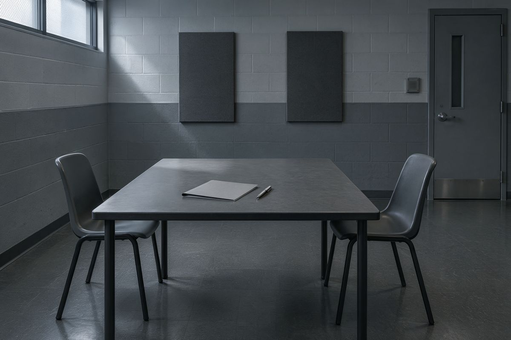

Hòa giải bắt buộc trước khi khởi kiện — bỏ qua có bị trả đơn không?
Một số tranh chấp phải qua hòa giải tại UBND trước khi tòa thụ lý. Thiếu biên bản này, đơn kiện bị trả về.
Đọc bài
Luật sư tranh tụng · Đoàn Luật sư Thành phố Hồ Chí Minh
Đọc kỹ hồ sơ của anh/chị, rồi nói rõ căn cứ pháp lý, điểm mạnh và điểm yếu trước khi nhận việc. Không hứa trước kết quả, cũng không vẽ thêm rủi ro.
Đây là những việc tôi làm hằng ngày. Mỗi ô có một điều nên làm ngay — làm sai bước đầu là mất quyền, mất thời hiệu, hoặc mất tiền không lấy lại được.

Nên làm ngay: chưa ký bất kỳ biên bản hay văn bản nhận nợ nào. Chụp hợp đồng vay, thông báo nợ và ngày nhận giấy rồi gửi tôi xem trước.
Đọc về thời hiệu đòi nợ
Nên làm ngay: gom hết giấy tờ gốc: giấy tay, biên nhận tiền, sổ cũ, bản đồ, văn bản của xã/phường. Đừng nộp đơn kiện khi chưa hòa giải ở UBND với loại tranh chấp bắt buộc.
Đọc về mua đất giấy tayNên làm ngay: xác định tòa nơi bị đơn cư trú và giữ chứng cứ về tiền riêng mua tài sản. Ly hôn đơn phương vẫn làm được dù bên kia không ký.
Đọc về ly hôn đơn phươngNên làm ngay: lưu lại tin nhắn, email, bảng chấm công và quyết định cho nghỉ. Thời hiệu khiếu nại và khởi kiện lao động ngắn, nên cần làm sớm.
Gửi tình huống
Nên làm ngay: hỏi rõ mình được mời với tư cách gì, về việc gì trước khi lên làm việc; không khai theo gợi ý. Luật sư có thể tham gia ngay từ giai đoạn điều tra.
Gửi tình huống
Nên làm ngay: giữ nguyên tin nhắn chuyển khoản và mọi lần bên kia thừa nhận nợ — một dòng tin nhắn xác nhận nợ có thể quyết định việc còn hay hết thời hiệu.
Đọc Án lệ 81/2025Bốn bước, theo đúng thứ tự. Anh/chị biết trước mình đang ở đâu và sắp tới phải làm gì.
Qua Zalo hoặc Messenger, kèm ảnh giấy tờ. Tôi đọc và hỏi lại những chỗ cần làm rõ.
Nói rõ anh/chị đang có căn cứ gì, thiếu gì, rủi ro ở đâu; việc gì nên theo, việc gì không.
Phí báo một lần trước khi làm, ghi trong hợp đồng dịch vụ pháp lý. Không phát sinh ngoài thỏa thuận.
Soạn đơn, nộp, theo dõi tiến độ và trực tiếp tham gia phiên xử. Cập nhật cho anh/chị sau mỗi mốc.

Tôi là luật sư thuộc Đoàn Luật sư TP.HCM, hành nghề tranh tụng: trực tiếp tham gia tố tụng và đại diện khách hàng trong các vụ dân sự, tín dụng ngân hàng, đất đai, hôn nhân gia đình, lao động, hành chính và hình sự tại tòa án các cấp.
Điều tôi giữ trong mọi hồ sơ: đọc kỹ tài liệu, tìm căn cứ pháp lý cụ thể, và nói thật với khách hàng về chỗ mạnh, chỗ yếu của vụ việc. Nếu vụ việc không có hướng xử lý, tôi nói ngay ở buổi đầu — không giữ hợp đồng bằng lời hứa.
Đánh giá ngay lần trao đổi đầu, kể cả khi câu trả lời là "không nên kiện". Không cam kết kết quả.
Ghi trong hợp đồng dịch vụ pháp lý trước khi làm. Không phát sinh ngoài thỏa thuận.
Tôi là người đánh giá hồ sơ, ký văn bản và ra tòa cho vụ việc của anh/chị, từ đầu đến cuối.
Nhận có kiểm soát để mỗi vụ được đọc kỹ, không làm theo kiểu dây chuyền.
Án lệ và tình huống thực tế, viết ngắn để anh/chị tự đối chiếu với chuyện của mình. Xem tất cả bài viết
Một số tranh chấp phải qua hòa giải tại UBND trước khi tòa thụ lý. Thiếu biên bản này, đơn kiện bị trả về.
Đọc bàiNgân hàng chỉ có 3 năm để kiện phần lãi; nợ gốc thì khác. Tòa chỉ áp dụng thời hiệu khi anh/chị yêu cầu đúng lúc.
Đọc bàiĐã nộp tờ khai và tổ chức lễ cưới nhưng chưa đăng ký — đất mua trong giai đoạn này vẫn có thể bị xác định là tài sản chung khi ly hôn.
Đọc bàiNhững câu tôi nhận gần như mỗi ngày qua inbox.
Tùy ba thứ: chứng cứ đang có, còn thời hiệu hay không, và giá trị tranh chấp so với chi phí theo đuổi. Gửi tôi tình huống và ảnh giấy tờ, tôi sẽ nói có căn cứ để theo hay không trước khi bàn đến chuyện phí.
Luật sư không được và không thể cam kết kết quả. Sau khi đọc hồ sơ, tôi nói rõ anh/chị đang có căn cứ gì, bên kia có gì, điểm nào rủi ro và cần bổ sung chứng cứ gì — để anh/chị tự quyết định có theo hay không.
Phí được báo trước khi ký hợp đồng và không phát sinh thêm. Mức phí tùy độ phức tạp và giai đoạn tham gia, tôi trao đổi minh bạch ngay sau khi nắm được vụ việc.
Vụ dân sự thường mất 6–18 tháng ở cấp sơ thẩm. Vụ hòa giải thành trước phiên tòa nhanh hơn nhiều. Tôi sẽ ước lượng cụ thể sau khi xem hồ sơ.
Được. Trao đổi ban đầu qua Zalo, gửi ảnh hoặc bản scan hồ sơ. Tôi nhận vụ việc tại TP.HCM và các tỉnh; với khách ở nước ngoài, nhắn tin để tôi trả lời theo múi giờ của anh/chị.
Chưa ký văn bản nào trước khi được tư vấn, và nhắn cho tôi ngay kèm ảnh giấy mời. Hành động sai ở bước đầu có thể làm mất quyền phản đối hoặc mất lợi thế về thời hiệu.
Nhắn tin là cách nhanh nhất. Tôi trả lời trong giờ làm việc; khi cần, hẹn gặp trực tiếp tại TP.HCM sau khi đã trao đổi sơ bộ.
Giờ làm việc: Thứ Hai – Thứ Bảy, 8:00 – 17:30 · Làm việc tại TP. Hồ Chí Minh, nhận vụ việc ở các tỉnh.